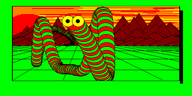

Sinclair QL disks

I first learnt programming at around age 9 in the early 1990s, on a
Sinclair QL. The
native storage format for the QL was
microdrive cassettes,
which were notoriously unreliable, slow and had a tiny capacity. Fortunately,
my QL was equipped with a
trump card
expansion card, providing additional memory and floppy disk storage.
Recently, I dumped the contents of some of my old floppy disks to files
and wrote some scripts to decode the contents.
Filesystem format
The QL disk file system format is a modified version of the format used
on the original microdrive cassettes. I have written
about the filesystem format.
Scripts
Various scripts for extracting the contents of the disks. These are all
written in Python.
- Filesystem dumper. This reads QL
disks that have been dumped using the Unix dd command,
and extracts all of the files that it finds on the file system.
- Image converter for image files
in the QL screen format. This can be used to convert files stored
using eg. SBYTES flp1_image, 131072, 32768 (which is used
as an example in the QL manual) into PNG format files.
QL software
This is some software that I managed to extract from the disks:
Raw disk images
My own stuff
Various notable programs of my own creation
- 1ST - The first program I wrote
- ai - Some kind of misguided attempt at artificial intelligence
- house3
- Somewhat odd text adventure
- qldos
- An attempt at emulating MS/DOS!
Other stuff
- A worm (I remember this program displayed a
message saying "dedicated to new age music")
{kind=link}